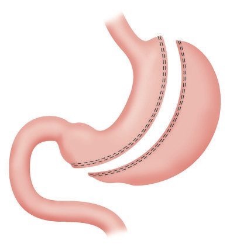
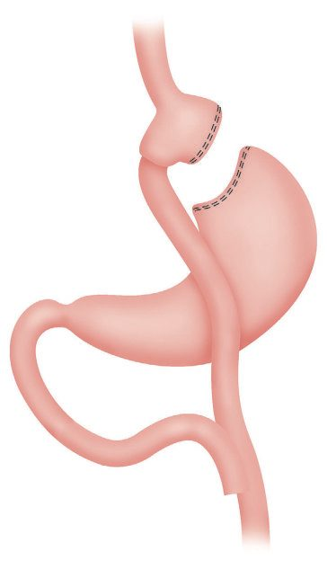
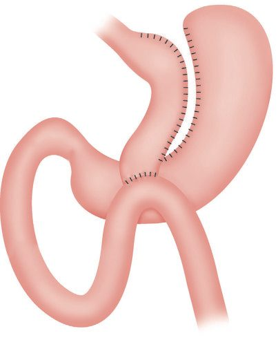
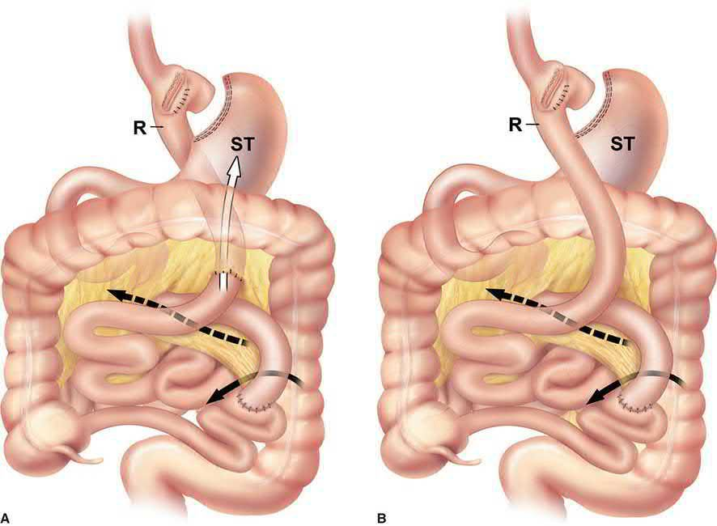

Bariatric Surgery
Summary
- Bariatric surgery is the branch of surgery involving manipulation of the stomach and/or small bowel to achieve weight loss and control of obesity-related disease [1].
- The American Medical Association officially recognized obesity as a disease in 2013 [2].
- Bariatric surgery leads to weight loss of 25–35% of body weight after 1 year with sustained maintenance of 15–25% at 20 years, and represents "one of the most remarkable stories in modern medicine" in its superiority over medical therapy for morbid obesity and its comorbidities, with demonstrated long-term survival benefit [1][2].
In the UK, referral, assessment, service standards and follow-up are set by NICE NG246, which brings together and updates all of NICE's previous guidance on overweight and obesity, superseding CG189 [3]. Surgery sits at the end of a pathway delivered through specialist overweight and obesity management services, and referral is conditional on the person agreeing to lifelong follow-up [3].
Definition
Morbid obesity is defined as being 100 lb above ideal body weight, twice ideal body weight, or a body mass index (BMI) meeting specific thresholds [2]. BMI categories: normal 18.5–24.9 kg/m², overweight 25.0–29.9, class 1 obesity 30.0–34.9, class 2 obesity 35.0–39.9, class 3 obesity ≥40.0 kg/m² ("super-obesity" ≥49.9 kg/m²) [1]. "Metabolic" or "diabetes" surgery is increasingly used alongside "bariatric surgery" to emphasize the highly effective way surgery improves the metabolic syndrome, with weight loss as an additional effect [1].
Pathophysiology
- Severe obesity has a multifactorial pathophysiology with a genetic predisposition; specific genes include FTO (fat mass and obesity related, controlling feeding behaviour and energy expenditure) and MC4R deficiency (melanocortin 4 receptor), the most common single-gene cause of severe obesity, found in up to 5% of patients with severe early-onset obesity [1][2].
- Other monogenic causes include leptin/leptin receptor mutations (autosomal recessive, severe childhood obesity), ghrelin receptor mutations, and POMC mutations [2].
- Ghrelin, the only known orexigenic gut hormone, is secreted by P/D1 cells of the gastric fundus and stimulates appetite via hypothalamic neuropeptide Y and growth hormone release; increased ghrelin after low-calorie diets is a proposed mechanism for the failure of most diets after 6 months [2].
- Gut microbiome alterations have also been implicated in the development of obesity, insulin resistance, and altered energy expenditure [2].
- Bariatric surgery is thought to "reset" the basal metabolic rate homeostatic set point that normally causes weight regain after dieting, with mechanisms including reduced appetite/early satiety mediated by gut hormones such as GLP-1 and peptide YY (PYY), changes in bile acid metabolism, and (for gastric bypass) accelerated rather than delayed gastric emptying (challenging the older belief that these are purely restrictive procedures) [1].
Mechanisms of weight loss and diabetes remission
- Schwartz stresses that neither Roux-en-Y bypass nor sleeve gastrectomy can be thought of as primarily "restrictive": both produce behavioural and physiological changes that maintain the new weight and metabolic improvements distinct from those of weight loss alone, whereas the adjustable band depends mostly on gastric restriction and its metabolic effects follow from the weight lost, an understanding that points away from the old restrictive-versus-malabsorptive classification [4].
- The older "foregut hypothesis" attributes the benefit of bypass to exclusion of the upper small intestine and loss of nutrient-dependent hormonal actions that impair glucose tolerance, while the "hindgut hypothesis" attributes it to rapid delivery of nutrients distally with increased GLP-1 and PYY secretion and the ileal brake; the shared metabolic effects of the sleeve, which bypasses nothing, suggest directions of study away from that distinction [4].
- Gastric emptying and insulin sensitivity increase after both operations, functional MRI shows reduced activation of food-reward centres in response to high-calorie foods after bypass, stretch-sensitive vagal endings in the pouch and Roux limb may signal early satiety, and ghrelin data are conflicting [4].
- Obese subjects have an elevated Firmicutes (Lactobacillus and Clostridium) to Bacteroidetes (Bacteroides, Prevotella) ratio that reverses at 3 and 6 months after bypass; faecal bacterial transplant reproduces some of the benefits of bypass, and oral lactobacillus after bypass increases weight loss [4].
- Serum bile acids rise after bypass because undiluted bile is diverted to the distal bowel, activating the TGR5 receptor on GLP-1-secreting L cells and jejunal FXR, which regulates lipid and glucose metabolism and clears triglycerides; in mice the therapeutic value of the sleeve depends on raised circulating bile acids and the associated microbiota change rather than restriction, and in patients who lost more than 50% of excess weight, ghrelin and GLP-1 rose while PYY, GLP-2, citrulline and FGF-19 had no effect on weight loss [4].
- Pories found more than 20 years ago that bariatric surgery rapidly normalised glucose in obese diabetics with most still disease-free at 10 years; candidate mechanisms now include altered bile-acid metabolism, nutrient sensing, intestinal adaptation, incretins, possible anti-incretins and the microbiome, converging on reduced hepatic glucose production, increased tissue glucose uptake, improved insulin sensitivity and enhanced β-cell function, and understanding them may allow treatments that "bypass the bypass" [4].
- Worldwide the number of adults with diabetes rose from 108 million in 1980 to 422 million in 2014, and in the United States diabetes is the second commonest cause of adult hospitalisation, about 11% of admissions [4].
Clinical features
- Morbid obesity is associated with numerous medical comorbidities: arthritis/degenerative joint disease (present in at least 50% of surgical candidates), obstructive sleep apnea (35–94% by sleep study, most series >60%), asthma (>25%), hypertension (>30%), type 2 diabetes (>20%), and GERD (20–30%) [2].
- The metabolic syndrome (type 2 diabetes/insulin resistance, dyslipidaemia, hypertension, central obesity with waist circumference >35 inches in women or >40 inches in men) confers high risk of early cardiovascular death [2].
- Obesity increases risk of cancers of the thyroid, colon, rectum, oesophagus, stomach, kidney, prostate, gallbladder, pancreas, breast (postmenopausal), endometrium, ovaries, and cervix [2].
- A 40-year-old male with morbid obesity has a 12.4% reduction in life expectancy (9.1 years of life lost) compared to a non-obese male [2].
- Significant psychosocial burden includes depression, low self-esteem, history of physical or sexual abuse, and employment/social discrimination [2].
Etiology
Obesity is multifactorial, involving genetic predisposition (family clustering is common, it is rare for only one family member to have severe obesity), epigenetic gene-environment interactions, gut microbiome alterations, and hormonal/appetite dysregulation (persistent hunger not satiated by amounts of food that satisfy non-obese individuals) [2]. Conditions associated with severe/complex obesity include type 2 diabetes, hypertension, dyslipidaemia, obstructive sleep apnoea, arthritis/functional impairment, GERD, non-alcoholic fatty liver disease/NASH, polycystic ovary syndrome, clinical depression, and various cancers (particularly endometrial) [1].
Diagnosis
- Preoperative evaluation includes a documented, medically supervised diet, primary care counselling/referral, and patient education (written materials/seminars on procedures, expected results, and complications) [2].
- The multidisciplinary evaluation team includes the surgeon, nutritionist, anesthesiologist, nurse care coordinator, and psychiatrist/psychologist, plus medical specialists as indicated (cardiac, pulmonary, GI, endocrine) [2].
- Cardiovascular evaluation assesses recent chest pain and exercise tolerance, with formal cardiology workup/stress testing if indicated; sleep studies are performed for suggestive histories of sleep apnea (snoring, witnessed apnea, daytime somnolence) [2].
- Screening flexible upper endoscopy and gallbladder ultrasound are performed as indicated [2].
- Preoperative screening for upper GI symptoms is essential; up to 20% of asymptomatic patients may have "silent" esophagitis and up to 40% may have abnormal acid exposure on pH monitoring, so history alone is an insensitive screen for GERD, and the American Society for Metabolic and Bariatric Surgery states routine preoperative EGD "is justifiable and should be done at the surgeon's discretion" [5].
Preoperative checklist as Schwartz sets it out
- Obstructive sleep apnoea is prevalent in over 90% of bariatric candidates with about a third undiagnosed; the Epworth Sleepiness Scale screens for daytime sleepiness, routine preoperative polysomnography should be considered, and CPAP is recommended perioperatively, while the obesity-hypoventilation syndrome (resting PaO2 below 55 mmHg and PaCO2 above 47 mmHg with pulmonary hypertension and polycythaemia) needs pulmonary consultation and possibly postoperative intensive care [4].
- A 10% loss of total body weight on an energy-restricted diet reduces hepatic volume and may ease the technical aspects of surgery in extreme central obesity, and cirrhosis is associated with poor outcomes including progression to transplantation [4].
- Reasonable preoperative glycaemic targets are an HbA1c of 6.5–7.0% or less, fasting glucose of 110 mg/dL or less and 2-hour postprandial glucose of 140 mg/dL or less, relaxed for advanced comorbidity or long-standing diabetes [4].
- Patients with GERD on medication should have a screening endoscopy to exclude Barrett's oesophagus and gastroduodenal lesions, especially before a bypass, after which the distal stomach and duodenum are no longer easily inspected, and Barrett's is a contraindication to the reflux-inducing sleeve, while a hiatal hernia found preoperatively alerts the surgeon to repair it intraoperatively [4].
- The recommended preoperative screen includes routine laboratory tests, iron studies, B12, folate and 25-hydroxyvitamin D (vitamins A and E optional), sleep-apnoea screening with ECG, chest radiograph and echocardiography where cardiac disease or pulmonary hypertension is suspected, H. pylori screening in high-prevalence areas, HbA1c with prediabetes or diabetes, TSH with thyroid symptoms, androgens where polycystic ovary syndrome is suspected, and screening for Cushing's syndrome (1 mg overnight dexamethasone test, 24-hour urinary free cortisol or 11 pm salivary cortisol) if clinically suspected, plus dietitian and psychosocial-behavioural evaluations, pregnancy and smoking-cessation counselling, and verification of cancer screening [4].
- Psychological assessment aims to identify poorly controlled psychiatric illness or active substance misuse and strategies for long-term weight management, but no consensus guideline exists and assessments in practice may be inaccurate because patients present themselves favourably to gain access to surgery [4].
Scoring and Severity
- Eligibility per NIH/AHA/ACC/Obesity Society guidelines: BMI >40 kg/m² without comorbidity, or BMI >35 kg/m² with an obesity-related comorbid condition; ASMBS/IFSO 2022 updated recommendations extend consideration to BMI >35 kg/m² regardless of comorbidity, and suggest considering surgery for BMI 30–34.9 kg/m² with comorbidity, though insurance coverage has not caught up to these thresholds [2].
- Additional eligibility criteria: failed dietary/behavioral therapy, psychiatric stability without alcohol/drug dependence, understanding of the operation and its sequelae, motivation, and no medical problems precluding survival of surgery [2][6].
- The Obesity Surgery-Mortality Risk Score (OS-MRS) assigns one point each for age ≥45, BMI ≥50 kg/m², male gender, hypertension, and increased DVT/PE risk, with higher scores indicating greater perioperative risk; the Edmonton Obesity Staging System (EOSS) is also used to discuss prognosis and risk with patients [1].
- Absolute contraindications include inability to ambulate (precluding recovery during rapid weight loss) and Prader-Willi syndrome (hyperphagia unaffected by any surgical therapy); patients weighing more than 500 lb are at increased risk and are typically required to lose weight to that threshold nonoperatively first, given limitations of imaging equipment and OR/monitoring apparatus [2].
UK referral thresholds differ from the American criteria above, and are framed as referral for assessment by a specialist service rather than as eligibility for an operation [3].
| Threshold | Action |
|---|---|
| BMI 40 kg/m² or more, or 35–39.9 kg/m² with a significant health condition that could be improved by weight loss, and the person agrees to the necessary long-term follow-up, for example lifelong annual reviews | Offer referral for comprehensive assessment by a specialist overweight and obesity management service (1.18.1) |
| BMI 35 kg/m² or more with recent-onset type 2 diabetes, diagnosed within the past 10 years, and receiving or about to receive specialist service assessment | Offer expedited assessment (1.18.3) |
| BMI 30–34.9 kg/m² with recent-onset type 2 diabetes on the same basis | Consider expedited assessment (1.18.4) |
| South Asian, Chinese, other Asian, Middle Eastern, Black African or African-Caribbean background | Consider referral, and expedited assessment, at a BMI threshold reduced by 2.5 kg/m², because these groups are prone to central adiposity and their cardiometabolic risk occurs at lower BMI (1.18.2, 1.18.5) |
Table reproduces the referral thresholds above [3]. Conditions NICE gives as examples of those that can improve after bariatric surgery are cardiovascular disease, hypertension, idiopathic intracranial hypertension, non-alcoholic fatty liver disease with or without steatohepatitis, obstructive sleep apnoea, and type 2 diabetes [3].
![The NG246 referral pathway as three tiers, an ethnicity adjustment and a follow-up bar. Tier 1, offer referral for comprehensive assessment by a specialist overweight and obesity management service: BMI 40 or more, or 35–39.9 with a significant health condition that could be improved by weight loss (1.18.1). Tier 2, offer expedited assessment: BMI 35 or more with type 2 diabetes diagnosed within the past 10 years (1.18.3). Tier 3, consider expedited assessment: BMI 30–34.9 on the same diabetes basis (1.18.4), the offer/consider split between tiers 2 and 3 is the whole point of the pair. Ethnicity adjustment: reduce the BMI threshold by 2.5, because these groups are prone to central adiposity and their cardiometabolic risk occurs at lower BMI (1.18.2, 1.18.5); the figure abbreviates the list, which reads in full South Asian, Chinese, other Asian, Middle Eastern, Black African or African-Caribbean. Follow-up bar: agreement to the necessary long-term follow-up, for example lifelong annual reviews, is written into the 1.18.1 threshold itself rather than left as a separate consideration; then a minimum 2-year package within the bariatric service (1.18.17); then, after discharge from the service, at least annual monitoring of nutritional status with appropriate supplementation, shared with primary care (1.18.18). Note that NG246 contains no rule making surgery the option of choice above BMI 50, that appeared in the superseded CG189](../assets/infographics/bariatric-uk-referral.webp)
Note two features of the current guideline. Referral is conditional on the person agreeing to long-term follow-up, which is written into the threshold itself rather than treated as a separate consideration; and NG246 contains no separate "surgery is the option of choice above BMI 50" rule, which appeared in the superseded guidance [3].
Surgery is not generally recommended in children or young people, and may be considered only in exceptional circumstances and where physiological maturity has been achieved or nearly achieved [3]. All young people must have a comprehensive psychological, educational, family and social assessment beforehand, and a full medical evaluation including genetic screening to exclude rare treatable causes of obesity [3].
Selection criteria, contraindications and a mortality risk score
- Schwartz's selection criteria retain the 1991 NIH consensus, BMI of 40 kg/m² or more without comorbidity, or 35 kg/m² or more with obesity-associated comorbidity, after failure of non-surgical attempts including non-professional programmes, with a commitment to follow-up, supplements and recommended tests, and list as contraindications prohibitive surgical risk (ASA IV), reversible endocrine or other disorders causing obesity, current drug or alcohol misuse, uncontrolled severe psychiatric illness, uncontrolled severe bulimia, and lack of comprehension of the risks, benefits, alternatives and lifestyle changes [4].
- The 2016 second Diabetes Surgery Summit (DSS-II) added that metabolic surgery should be considered for type 2 diabetes with a BMI of 30–34.9 kg/m² when glycaemia is inadequately controlled despite optimal medication, and that the BMI threshold for metabolic surgery should be lowered by 2.5 kg/m² for at-risk Asian populations [4].
- Tobacco must be avoided completely with cessation 6 weeks before surgery, since smoking increases poor wound healing and anastomotic ulcers; non-ambulatory status is a relative contraindication associated with increased risk and with the near-impossibility of placing such patients in care facilities, and lack of social support or a poor home environment can also preclude surgery [4].
- The NIH criteria set no age limits: earlier intervention in adolescents may reverse comorbidity better than in adults, older patients gain immediate quality of life but not necessarily longevity, one study found increased mortality and morbidity after bypass in patients over 70, and the Utah group found bypass protective against mortality even in older patients [4].
- A validated score for 90-day mortality after laparoscopic bypass uses five characteristics, BMI of 50 kg/m² or more, male sex, hypertension, a known risk factor for pulmonary embolism, and age 45 or more, and patients with 4–5 of them have a 4.3% risk against 0.26% with 0–1 [4].
- In the LABS study the major predictors of complications were a history of venous thromboembolism, obstructive sleep apnoea, inability to walk 300 feet (91 m), extreme BMI and open bypass [4].
Treatment and Management
Medical therapy for severe obesity has historically had limited long-term success, the likelihood of losing enough weight by diet alone to reach BMI <35 kg/m² is estimated at 3% or less, though incretin-based pharmacotherapy is changing this landscape [2]. ASMBS and IFSO have reasserted the safety, efficacy, durability, and mortality benefit of bariatric/metabolic surgery compared with nonoperative treatment [2].
Perioperative care
- Perioperative care follows Enhanced Recovery After Surgery (ERAS) principles: preoperative antibiotics (weight-adjusted first-generation cephalosporin) and DVT prophylaxis (mechanical plus chemoprophylaxis with low-molecular-weight heparin, which the Michigan Bariatric Surgery Collaborative found superior to unfractionated heparin), multimodal non-narcotic analgesia (IV acetaminophen, gabapentin/pregabalin, PRN narcotic, avoiding PCA pumps), limited IV fluids, and early ambulation [1][2].
- One-night hospitalization with discharge on a bariatric full liquid diet is routine for laparoscopic sleeve gastrectomy (LSG) and Roux-en-Y gastric bypass (RYGB) [2].
- A "liver shrinkage diet" for at least 2 weeks preoperatively is routine, especially with central obesity, to reduce liver size and facilitate surgical access [1].
Surgical volume and recognising a leak
High-volume units (100–125 cases/year, with at least two surgeons performing ≥50 cases each) achieve better outcomes; a surgeon's learning curve for gastric bypass is roughly 100 cases [1]. The most dreaded postoperative complication is a GI leak, which in severely obese patients may present only as tachycardia, tachypnea, or agitation without fever or peritonitis, requiring a high index of suspicion and CT with oral contrast, upper GI swallow, or laparoscopy for diagnosis [2].
Concurrent procedures
Concurrent procedures are considered during the same operation: where gallstones are found, simultaneous laparoscopic cholecystectomy is recommended, with published series showing under 1% complications and no increase in length of stay or morbidity, while patients without gallstones are offered a 6-month course of ursodiol 300 mg twice daily to reduce postoperative gallstone incidence to about 4%. Abdominal wall hernias, most commonly umbilical, should be repaired at the time of surgery if large enough to risk incarceration, since deferring repair carries a significantly higher rate of emergency incarceration [7].
NICE criteria for referral and surgery
- The multidisciplinary assessment must cover the person's medical needs, nutritional status and eating behaviours, psychological needs bearing on adherence to postoperative care, previous weight-management attempts and their response, other factors affecting outcome such as language barriers, learning disabilities and neurodevelopmental conditions or deprivation, any individual arrangements needed before the day of surgery, and fitness for anaesthesia and surgery [3].
- The surgeon must discuss the potential benefits, plans for conception and pregnancy, the longer-term implications and requirements of surgery, and the potential risks including perioperative mortality and complications [3].
- The choice of procedure is made jointly with the person, taking into account the severity of obesity and comorbidities, the best available evidence on effectiveness and long-term effects, the facilities and equipment available, and the experience of the operating surgeon [3].
- Medicines may be used to maintain or reduce weight while a person recommended for surgery is waiting, if the waiting time is excessive [3].
- The surgeon must have had relevant supervised training and specialist experience in bariatric surgery, and only surgeons with extensive experience should undertake revisional surgery, in specialist centres, because of its higher complication rate and increased mortality compared with primary surgery [3].
- Hospitals must ensure access to, and staff trained to use, suitable equipment including weighing scales, blood pressure cuffs, theatre tables, walking frames, commodes, hoists, bed frames, pressure-relieving mattresses and seating [3].
Thromboembolism, pregnancy and anaesthesia
- The overall risk of venous thromboembolism after bariatric surgery is 0.42%, over 70% of events occurring after discharge and most within 30 days; risk is higher after bypass than banding and after open surgery, in men, older patients, those with higher BMI or a previous event, and, with a hazard ratio of 7.66, in patients with an inferior vena cava filter, so prophylactic filter placement does not prevent embolism and its complications may outweigh any benefit [4].
- Pregnancy should be avoided preoperatively and for 12–18 months afterwards, women who conceive need monitoring of weight gain, supplementation and fetal health, and all women of reproductive age should be counselled on contraception because absorption and effectiveness are inconsistent; a Swedish study linked prior bariatric surgery to reduced gestational diabetes and excessive fetal growth but shorter gestation, more small-for-gestational-age infants and, in later follow-up, more preterm and spontaneous preterm birth [4].
- For the anaesthetist the two challenges are vascular access and the airway: fibreoptic or video laryngoscopy is used for class III–IV airways, preoxygenation for 3 minutes or longer buys time, desaturation must be corrected immediately, pneumoperitoneum raises the required minute ventilation and can cause bradyarrhythmia and acidosis in long cases (a radial arterial line is standard in cardiopulmonary disease), and pharmacokinetics differ, a larger volume of distribution prolongs thiopentone (dose by lean body weight) and benzodiazepines, increased pseudocholinesterase activity requires more pancuronium, and enflurane metabolism is increased [4].
- The 2016 ERAS Society guideline for bariatric surgery recommends shorter-acting, lower-absorption anaesthetic agents and opioid minimisation, and a meta-analysis of ERAS protocols found a significant reduction in length of stay [4].
- Programme infrastructure includes a scale weighing to 800 lb (363 kg), an operating table rated to 600–800 lb that positions in steep reverse Trendelenburg, larger compression devices, extra padding, safety belts and a footboard, an angled 30° or 45° telescope, extra-long instruments and staplers, and a liver-retractor system [4].
Device-based and investigational options
- FDA-approved intermediate devices for BMI 30–40 kg/m² sit between lifestyle modification and surgery [4].
- Vagal nerve block with electrodes on both vagal trunks at the gastro-oesophageal junction, delivering at least 12 hours of therapy a day, produced 9.2% against 6.0% total body weight loss with sham at 12 months and 8.8% against 3.8% at 18 months with few serious complications [4].
- The original air-filled Garren-Edwards intragastric bubble of the 1980s caused small-bowel obstruction from deflation, ulcers with haemorrhage and perforation and was abandoned; current saline-filled single- and double-lumen balloons for BMI over 27 kg/m² gave 7.6% and 10.2% total body weight loss at 6 months in their pivotal trials, with early removal for intolerance in 9–18%, deflation without migration in 6% and gastric ulcers in 10% [4].
- An aspiration gastrostomy that drains about 30% of ingested calories produced 12.1% against 3.5% weight loss in a randomised trial with 3.6% serious adverse events, and the duodenal-jejunal bypass liner, which mimics the exclusion component of bypass, gives modest weight loss and glycaemic improvement at the cost of migration, obstruction and epigastric pain, with a 29% early removal rate in one study [4].
Surgeries
- Laparoscopic sleeve gastrectomy (LSG) is now the most common bariatric procedure (about 57–59% of US bariatric operations in recent years), valued for technical simplicity, pylorus preservation (avoiding dumping), metabolic reduction in ghrelin, no need for serial adjustment, and lower internal hernia/malabsorption risk than bypass procedures [2].
- The entire greater curvature is divided over a 32–40 Fr bougie from the antrum (leaving 3–5 cm of antrum intact near the pylorus) to the angle of His using sequential linear stapler firings, preserving the left gastric vessels and lesser curve blood supply, with the staple line kept at least 5 cm proximal to the pylorus to avoid narrowing the incisura [1][2].
- Smaller bougie size is associated with more GERD; larger bougie size is associated with more weight regain [2].
Roux-en-Y gastric bypass
- Roux-en-Y gastric bypass (RYGB) creates a small (15–20 mL/20–30 mL) proximal lesser-curvature gastric pouch anastomosed to a Roux limb of jejunum (100 cm for BMI in the 40s, up to 150 cm for BMI >50), with the biliopancreatic limb anastomosed to the Roux limb 50 cm distal to the ligament of Treitz.
- An antecolic, antegastric Roux limb configuration is preferred to reduce internal hernia risk, and all mesenteric defects (jejunojejunostomy and Petersen's defect) should be closed with nonabsorbable suture [2].
- A smaller gastric pouch reduces marginal ulceration and improves long-term weight loss [2].
Mini bypass and gastric banding
One-anastomosis (mini) gastric bypass (OAGB) uses a longer gastric pouch with a single antecolic loop gastrojejunostomy, avoiding a Roux-en-Y configuration, but raises concern for symptomatic biliary reflux, marginal ulcers, and possible long-term oesophageal/gastric cancer risk [1]. Laparoscopic adjustable gastric banding (LAGB) places a band via the pars flaccida technique just below the OGJ, creating a small virtual pouch, connected to a subcutaneous port for saline adjustments to titrate restriction; use has declined dramatically due to high reintervention rates and poor durable weight loss compared with RYGB/LSG [1][2].
Biliopancreatic diversion and SADI-S
Biliopancreatic diversion (BPD) and BPD with duodenal switch (BPD-DS) produce weight loss primarily through malabsorption (plus a restrictive component), reconstructing the gut to leave only a short common channel (75–125 cm) of distal ileum for fat/protein absorption, and are increasingly reserved as definitive procedures after failed sleeve gastrectomy, but carry higher nutritional complication rates [1][2]. Single anastomosis duodenal-ileal bypass with sleeve gastrectomy (SADI-S), a simplified BPD-DS variant, preserves the pylorus with a single duodenoileal anastomosis and a longer common channel (250–300 cm), showing lower vitamin/mineral deficiency rates than BPD-DS [1][2].
The operations compared
![The six bariatric operations as a ladder ordered by three-year percentage excess weight loss, an outcome ordering, not a recommendation ranking, since NICE makes the choice of procedure a joint decision taking account of severity, evidence, available facilities and the operating surgeon's experience, and no guideline ranks these operations. Gastric band (LAGB): band below the oesophagogastric junction with a subcutaneous port; 40–50% EWL, 20% diabetes remission; slippage and erosion, with a 31.4% reoperation rate at ten years. Sleeve gastrectomy (LSG): greater curvature divided over a 32–40 Fr bougie; 50–60% EWL, 50% remission; staple-line leak 0.3–0.5%, and reflux needing conversion to bypass in up to 11.6%. Roux-en-Y gastric bypass (RYGB): 15–30 mL pouch with a 100–150 cm Roux limb; 50–60% EWL, 50% remission; internal hernia 4–17%, falling to 0–7% when the mesenteric defects are closed. One-anastomosis gastric bypass (OAGB): longer pouch with a single loop gastrojejunostomy; 60–80% EWL, 80% remission; biliary reflux and marginal ulcer. Biliopancreatic diversion with duodenal switch (BPD-DS): 75–125 cm common channel; 70–80% EWL, 80% remission; protein malnutrition in about 8%. SADI-S: pylorus preserved, one duodeno-ileal anastomosis, a longer 250–300 cm common channel; 70–80% EWL, 80% remission; fewer deficiencies than BPD-DS. Overall operative mortality is 0.07–0.1%, and in five-year randomised data gastric bypass beat sleeve on reflux remission, 60.4% versus 25%](../assets/infographics/bariatric-procedure-comparison.webp)



Technical detail of gastric bypass in Schwartz
- Relative contraindications to laparoscopic bypass are previous gastric or antireflux surgery, severe iron-deficiency anaemia, distal gastric or duodenal lesions needing future surveillance, and Barrett's with severe dysplasia [4].
- The pouch (<20 mL) must be totally separated from the distal stomach (stapling without division carries a high incidence of staple-line breakdown) and based on the lesser curvature to prevent dilatation; the biliopancreatic limb runs 20–50 cm from the ligament of Treitz and the Roux limb 75–150 cm (usually 100–150 cm), longer limbs giving more short-term but not long-term weight loss, and neither pouch size nor gastrojejunostomy calibre has been shown to relate to weight loss [4].
- Five ports plus a liver retractor are used; the jejunum is divided 40–50 cm beyond Treitz with a vascular cartridge, a side-to-side stapled jejunojejunostomy is made, the stapler defect is closed preferably with sutures and the mesenteric defect with running permanent suture, and the Roux limb is passed antecolic or through a defect in the transverse mesocolon just left of and above Treitz [4].
- The pouch is created by opening the lesser curvature about 3 cm below the gastro-oesophageal junction (or dividing the lesser-curve vessels with a vascular load), firing one transverse blue load and then successive firings toward the angle of His, optionally calibrated with an Ewald tube; the gastrojejunostomy may be linear-stapled with sutured closure of the defect, hand-sewn in two layers of absorbable suture over 1-cm enterotomies, or circular-stapled with the anvil passed transorally on an endoscopic guidewire or transgastrically, the circular technique being useful for a very small or high "salvage" pouch, though smaller circular staplers cause more stenosis than linear stapling, and the anastomosis is tested with methylene blue under pressure or endoscopic insufflation before all mesenteric defects are closed with permanent suture [4].
- Pneumoperitoneum, often difficult in these patients, can be created by lifting the left subcostal fascia with a tracheostomy hook to guide a Veress needle, since the thick body wall limits the Hasson approach; extra-long ports are used, pressures of 15–18 mmHg are typical and a high-flow insufflator is mandatory [4].
- A meta-analysis of 27 studies and over 25,000 patients found no difference between robotic and laparoscopic bariatric surgery in complications, stay, reoperation, conversion or mortality, but robotic surgery significantly increased operative time and cost (by over 20%) [4].
Sleeve, band and duodenal switch technique
- The sleeve was introduced as the first stage of a two-stage treatment for super-obesity (BMI >60 kg/m²) and is now a primary operation, with the second stage held in reserve; long-standing severe GERD makes a poor candidate and Barrett's is a contraindication, both because of future dysplasia risk and because an intact stomach may be needed for oesophageal reconstruction [4].
- The greater curvature is devascularised from 3–5 cm proximal to the pylorus up to the left crus with full fundal mobilisation, the first two firings run from that point toward a spot about 2 cm lateral to the incisura (where the antrum is thickest, so a sufficiently tall staple load is essential) a 32–40 Fr bougie or the endoscope is placed along the lesser curvature as a guide, the incisura must not be narrowed (confirmed on both anterior and posterior surfaces), the last firings run parallel to the bougie toward the angle of His without stapling too close to it, staple heights are reduced proximally, and the specimen exits through a 15-mm port after inspection or a methylene-blue or submerged air-leak test [4].
- A literature summary suggests a 40 Fr bougie lowers stenosis and possibly leak rates without compromising weight loss, though smaller bougies have given good weight loss without stenosis in individual series; staple-line bleeding is about 2%, and in over 180,000 MBSAQIP sleeves reinforcement was associated with a higher leak rate (0.96% vs 0.65%) but lower bleeding (0.75% vs 1.00%), so no approach is clearly superior [4].
- The band is placed through the pars flaccida after dividing the peritoneum at the angle of His, repairing any hiatal hernia first, by passing a grasper right to left along the base of the crura to emerge at the angle of His and draw the band beneath the junction through fibrous tissue that anchors it posteriorly (the earlier retrogastric position in the lesser sac caused unacceptable slippage) after which it is locked with the buckle on the lesser curvature, the fundus is imbricated over it, the port is fixed to the fascia near the xiphoid and accessed with a non-cutting Huber needle, and the band is left empty apart from priming [4].
- Scopinaro's biliopancreatic diversion resects the distal half to two-thirds of the stomach (200-mL remnant), divides the ileum 250 cm from the ileocaecal valve, anastomoses its distal end to the stomach with a 2–3-cm stoma and its proximal end to the terminal ileum 100 cm from the valve, and adds prophylactic cholecystectomy for bile-salt malabsorption; the duodenal switch, adapted by Hess and Marceau from DeMeester's operation for bile reflux gastritis, replaces the gastrectomy with a lesser-curve sleeve over a 32–40 Fr bougie, divides the duodenum 2 cm beyond the pylorus and joins it to the distal 250 cm of ileum, usually end-to-end with a circular stapler, the most difficult step with a slightly higher leak rate [4].
- Contraindications to these malabsorptive operations include geographic distance from the surgeon, inability to afford supplements, and pre-existing calcium, iron or other deficiencies, and they are usually reserved for higher BMIs or failure of another operation [4].
Revisional surgery
- Reoperation is supported for insufficient weight loss or regain and for acute and chronic complications, with reported rates of 5–50% depending on the primary procedure, less weight loss than after a primary operation, higher morbidity and mortality, and a place only in experienced centres [4].
- Evaluation must establish the reason for revision and includes the original operative note, endoscopic and radiological anatomy, nutritional, behavioural and full medical assessment [4].
- Reversal of a vertical banded gastroplasty causes significant weight gain and re-VBG does poorly, but conversion to bypass or sleeve is safe; band removal alone causes significant regain, repositioning gives mixed results, and conversion to sleeve, bypass or duodenal switch, sometimes in two stages 3–6 months apart when adhesions or a thick gastric capsule are present, gives good outcomes [4].
- About 5–10% of sleeves need revision for poor weight loss (conversion to bypass or duodenal switch; re-sleeving is controversial), and 10–20% of bypass patients have inadequate loss or regain at 2 years, with options of banding the bypass, pouch or stoma revision, limb lengthening or conversion to duodenal switch, endoscopic pouch and stoma reduction having only small uncontrolled support [4].
- Complications driving revision include sleeve stricture at the incisura (endoscopic dilatation first, then bypass), leaks that become fistulous (conversion to bypass) and persistent reflux; after bypass, pouch or stoma dilatation, stricture, marginal ulcer, internal hernia, Roux stasis, gastrogastric fistula and metabolic derangement, with reversal reserved for intractable vomiting, extreme malnutrition, non-healing ulcers or leaks and patient choice, after which 50–88% regain significant weight; and after duodenal switch, protein-calorie malnutrition in 1–6%, managed nutritionally with pancreatic enzymes and only rarely by lengthening the common channel [4].
Complications
RYGB: anastomotic leak (gastrojejunostomy leaks more common and more life-threatening than jejunojejunostomy leaks; contemporary rates under 1%), presenting with tachycardia, tachypnea, and abdominal pain, early leaks require operative sepsis control, later stable leaks can be managed nonoperatively [2]. Pulmonary embolism/VTE is a leading cause of death (up to 80% of bariatric deaths show evidence of VTE), reduced to about 0.23% with modern prophylaxis [2].
Obstruction, stenosis and marginal ulcer
- Internal hernia/bowel obstruction is a surgical emergency (retrograde distension can rupture the distal gastric staple line); closure of mesenteric defects reduces internal hernia incidence from 4–17% to 0–7% [2].
- Gastrojejunostomy stenosis occurs in 2–7% (more with circular staplers), treated with endoscopic balloon dilation.
- Marginal ulcer occurs in 2–14% (risk increases with pouch size, 2.4-fold per 5 cm³ increase), managed with PPIs and avoidance of NSAIDs/smoking; fistula to the bypassed stomach requires surgical division [2].
Nutritional and metabolic complications
- Iron deficiency (15–40%, actual anemia in up to 20%) and vitamin B12 deficiency (15–20%) are the most common long-term metabolic complications, from bypass of the duodenum/proximal jejunum (iron) and inefficient intrinsic-factor-mediated absorption (B12) [2].
- Persistent vomiting risks Wernicke's encephalopathy, preventable with parenteral thiamine [2].
- A late metabolic complication of RYGB is post-gastric bypass hypoglycaemia, from inappropriately elevated insulin thought to result from exaggerated GLP-1 levels.
- A very-low-carbohydrate diet is first-line, with diazoxide, somatostatin, or GLP-1 receptor antagonists for diet failures, pancreatic resection was tried historically but is no longer recommended, since partial pancreatectomy recurs and total pancreatectomy exchanges one severe condition for another [8].
After sleeve, band and biliopancreatic diversion
LSG: staple line leak (0.3–0.5%, often related to stricture/narrowing at the incisura causing proximal high pressure), typically presenting 1–4 weeks postoperatively, managed with drainage, antibiotics, NPO, and possibly stenting or endoluminal vacuum therapy; stenosis (<1%, usually at the incisura), treated with dilation or revision to RYGB; and long-term GERD requiring conversion to RYGB in up to 11.6% of patients in long-term follow-up (SLEEVEPASS 10-year data) [2]. LAGB: slippage (can cause acute gastric strangulation, or present with dysphagia/regurgitation/heartburn/aspiration), band erosion, oesophageal dilation, and failure to lose weight are the "Achilles heel" of this procedure; a 10-year RCT showed less weight loss (27.4 kg vs. 42.4 kg) and higher reoperation rate (31.4% vs. 8.1%) versus RYGB [2]. BPD-DS/SADI-S: protein malnutrition (about 8% with BPD-DS, requiring hospitalization and parenteral nutrition, occasionally reoperation to lengthen the common channel) and fat-soluble vitamin deficiencies (A, D, calcium, iron, copper, all significantly higher with BPD-DS than SADI-S) [2]. Sleeve gastrectomy performed as part of bariatric weight-loss surgery should prompt repair of any hiatal hernia discovered intraoperatively [6].
Internal hernia after gastric bypass

Procedure-specific figures from Schwartz
- Mortality after laparoscopic bypass is consistently below 0.5% (about 0.3%, 0.14% and 0.2% at 30 days in national datasets); the LABS composite of death, thromboembolism, reintervention or failure of discharge by 30 days occurred in 4.8%, ASMBS morbidity was 14.87% in 30,864 bypasses, and specific rates are 0.3% anastomotic leak, 0.33% venous thromboembolism, 3–5% wound problems, 3–15% marginal ulcer, about 7% bowel obstruction, 4% transfusion and 1–19% anastomotic stenosis depending on the anastomosis, with 66% iron deficiency, 5% iron-deficiency anaemia, 50% B12 deficiency and at least 15% vitamin D deficiency, which is usually present preoperatively [4].
- Marginal ulcer presents with epigastric pain unaltered by eating, is diagnosed endoscopically and responds to PPIs in 90%, surgery being needed only for gastrogastric fistula, severe stenosis or perforation, which is treated by laparoscopic Graham patch; stenosis appears at 6–12 weeks, resolves with one or two balloon dilatations and needs reoperation in under 10%, almost always with a concurrent ulcer [4].
- Leak is the single serious early complication, tachycardia, tachypnoea, fever and oliguria should arouse suspicion, treatment is surgical except for a contained leak with a drain already in place and no deterioration, and repair is combined with drainage and a distal Stamm gastrostomy for feeding; early haematemesis means gastrojejunostomy bleeding until proved otherwise, and its chief danger is an intraluminal haematoma of the Roux limb and enteroenterostomy obstructing the biliopancreatic limb, so that any obstructive symptoms or radiological obstruction of that limb in the first weeks demand immediate operation to prevent rupture of the distal gastric staple line [4].
- Small-bowel obstruction after bypass must be treated differently from adhesive obstruction (emergency surgery, not conservative management) because the cause is usually an internal hernia through an unclosed mesenteric defect (antecolic or retrocolic); a contrast cut-off at the enteroenterostomy on CT is particularly suggestive, delayed cases infarct most of the bowel and are now referred for small-bowel transplantation or die, and early laparoscopy with a low camera port, identification of the caecum and retrograde tracing of the bowel allows reduction and closure of the defect if the bowel is viable [4].
- After the sleeve, the high-pressure tube puts the staple line at risk and worsens reflux: proximal leaks are commonest, related to distal stenosis at the incisura or stapling too close to the angle of His, may present late at 6 weeks to months, persist for months and are managed initially by drainage and stenting with conversion to bypass for a long-standing leak or persistent stenosis, whereas distal leaks present earlier from mechanical failure over thick tissue and are more amenable to repair; endoscopic dilatation, not beyond the original bougie size, treats stenosis and the twisting of the antrum away from the upper sleeve, succeeding after a mean 1.6 dilatations at an average 48 days [4].
- After banding, acute gastric prolapse (severe pain, immediate dysphagia and inability to swallow) is the commonest emergency: a horizontal rather than oblique band on plain film suggests it, all fluid is removed, a contrast study follows if symptoms persist and laparoscopic reduction and resuturing if prolapse persists; chronic prolapse with symmetrical pouch dilatation is managed by fluid removal and re-evaluation at 4–8 weeks; erosion occurs in 1–2%, presenting as port infection or low-grade sepsis with the white band visible endoscopically or unexplained free air on CT, and requires laparoscopic removal with repair of the perforation; port and tubing problems affect at least 5–15% and are usually fixed under local anaesthesia; band removal reached 40.9% at 10 years in Angrisani's series and 18 reoperations per 100 banded patients occurred within 3 years in LABS, while in O'Brien's cohort of 3227 patients 35% needed revision (proximal enlargement 26%, port and tubing 21%, erosion 3.4%) [4].
- After biliopancreatic diversion Scopinaro reported obstruction in 1.2%, wound infection in 1.2% and marginal ulcer in 2.8%, protein malnutrition in 7%, iron-deficiency anaemia under 5% and bone demineralisation in 53% at 5 years, with alopecia, night blindness and gallstones if the gallbladder is retained; protein-calorie malnutrition is treated with parenteral nutrition, and two such episodes are the usual indication to lengthen the common channel [4].
- Across procedures, Buchwald's meta-analysis of 361 studies gave 30-day mortality of 0.06% for banding, 0.21% for VBG, 0.16% for bypass and 1.11% for BPD/DS, the ACS network gave 0.11% for the sleeve between 0.05% for banding and 0.14% for bypass with 30-day complication rates of 5.6%, 1.4% and 5.9%, and SOS reported 14.5% non-fatal complications in 90 days but only 0.25% mortality [4].
Post-bypass hypoglycaemia and psychosocial harms
- Post-gastric-bypass hypoglycaemia affects 1–11% depending on definition and is defined by Whipple's triad, autonomic and neuroglycopenic symptoms with a plasma glucose below 55 mg/dL relieved by glucose, with inappropriately high insulin; nesidioblastosis was described in early pancreatic resection specimens, but current thinking attributes the syndrome to the anatomical and physiological changes rather than β-cell mass, GLP-1 being a candidate mediator since postprandial levels rise more than tenfold after bypass and are highest in those with neuroglycopenia [4].
- It must be distinguished from insulinoma, non-insulinoma pancreatogenous hypoglycaemia, reactive hypoglycaemia and early or late dumping, of which late dumping may be the milder end of a spectrum; first-line treatment is a low-glycaemic-index diet with pre-meal acarbose, then octreotide, diazoxide, calcium-channel blockers, GLP-1 receptor antagonists or feeding solely through a gastrostomy into the bypassed duodenum, while reversal of the bypass is not uniformly successful and pancreatic resection should not be considered for the majority [4].
- Alcohol is absorbed very rapidly after bypass and sleeve with marked rises in blood concentration from a single small drink; SOS found more alcohol abuse events after bypass over 20 years (HR 4.9), LABS found alcohol use disorders rose from 7.6% before to 9.6% in the second year after bypass with 20% reporting incident symptoms within 5 years, and illicit drug use and substance treatment rose over 7 years after bypass only, the risk factors being male sex, younger age and preoperative smoking or drinking [4].
- The Utah study showed a 58% rise in non-disease deaths after bypass including suicides, accidents and intentional poisonings, and Pennsylvania data gave post-bariatric suicide rates of 13.7 per 10,000 in men and 5.2 in women, both above matched national rates, 70% in the first 3 years when follow-up is incomplete [4].
Prognosis
- The Swedish Obese Subjects (SOS) study demonstrated sustained weight loss and improvement in obesity-related disease up to 20 years after surgery and was among the first to show a survival benefit (significant difference in overall mortality at mean 10-year follow-up), along with reduced micro- and macrovascular complications at 15 years and reduced cancer risk [1].
- A Utah study of nearly 8000 patients similarly showed improved survival after gastric bypass compared with matched controls [1].
- Overall bariatric operative mortality has declined to remarkably low levels, around 0.07–0.1% in the United States, similar to laparoscopic cholecystectomy or joint replacement [2].
- Three-year percentage excess weight loss (%EWL) and diabetes remission rates: sleeve gastrectomy 50–60% EWL/50% diabetes remission; gastric bypass 50–60% EWL/50% remission; one-anastomosis gastric bypass 60–80% EWL/80% remission; gastric band 40–50% EWL/20% remission; BPD-DS/SADI-S 70–80% EWL/80% remission [1].
- In head-to-head 5-year randomized trial data (SLEEVEPASS and SM-BOSS), RYGB showed somewhat greater (though not statistically significant) weight loss than LSG (57% vs. 49% EWL), similar diabetes and hypertension remission, and substantially better GERD remission (60.4% vs. 25%) [2].
- Bariatric surgery is highly cost-effective, with an incremental cost-effectiveness ratio comparable to smoking cessation and statin therapy for cardiovascular prevention, and the cost of the operation is typically recouped within 1–2 years through reduced medication costs [1].
- Follow-up is a defined package, not discretionary.
- Offer everyone who has had bariatric surgery a follow-up care package for a minimum of 2 years within the bariatric service, covering monitoring of nutritional intake including protein and vitamins and of mineral deficiencies, monitoring for comorbidities, medication review, individualised dietary and nutritional assessment, advice and support on physical activity, psychological support tailored to the person, and information about professionally led or peer-support groups [3].
- After discharge from the bariatric service, ensure at least annual monitoring of nutritional status with appropriate supplementation, as part of a shared-care model with primary care [3].
Arrange a prospective audit so that outcomes and complications of different procedures, the impact on quality of life and nutritional status, and the effect on comorbidities can be monitored in the short and long term; the surgeon should submit data to a national clinical audit scheme such as the National Bariatric Surgery Registry [3].
References
- Bailey & Love's Short Practice of Surgery, 28th ed., Ch. 68, Bariatric and metabolic surgery
- Sabiston Textbook of Surgery, 22nd ed., Ch. 99, Tables 99.5, 99.6, 99.7, 99.12
- NICE Guideline NG246: Overweight and obesity management (2025, updated 2026), 1.18.1; 1.18.1, 1.18.2, 1.18.3, 1.18.4, 1.18.5, 1.18.17, 1.18.18; 1.18.1–1.18.5; 1.18.7; 1.18.8; 1.18.9; 1.18.12; 1.18.13, 1.18.16; 1.18.15; 1.18.17; 1.18.18; 1.18.19, 1.18.20; 1.18.21, 1.18.22; 1.18.26, 1.18.27; 1.18; Overview; Box 2 www.nice.org.uk
- Schwartz's Principles of Surgery, 11th ed., Ch. 27, The Surgical Management of Obesity
- Sabiston Textbook of Surgery, 22nd ed., Ch. 83, Benign Esophageal Disorders
- The ABSITE Review, 2022, Ch. Stomach, listing BMI >40, or >35 with comorbidity, failure of nonsurgical weight reduction, psychological stability, absence of drug/alcohol abuse as the four required criteria
- Maingot's Abdominal Operations, 13th ed., Ch. 36, Morbid Obesity, Metabolic Syndrome, and Bariatric Surgery
- Schwartz's Principles of Surgery: ABSITE and Board Review, Ch. 27, The Surgical Management of Obesity
- Maingot's Abdominal Operations, 13th ed., Ch. 38